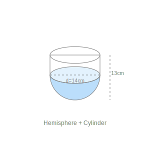
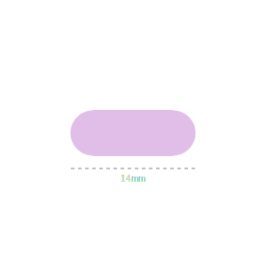

1. Two cubes each of volume 64 cm³ are joined end to end. Find the surface area of the
resulting cuboid.

Volume of cube = a³ = 64. So a = 4 cm.
When joined end to end, length L = 4 + 4 = 8 cm.
Breadth B = 4 cm. Height H = 4 cm.
Surface Area = 2(LB + BH + HL)
= 2(32 + 16 + 32)
= 2(80) = 160 cm².
Surface Area = 160 cm².
2. A vessel is in the form of a hollow hemisphere mounted by a hollow cylinder. The
diameter of the hemisphere is 14 cm and the total height of the vessel is 13 cm. Find the inner surface area
of the vessel.

Diameter = 14 cm => Radius r = 7 cm.
Total height = 13 cm.
Height of hemisphere portion = radius = 7 cm.
Height of cylinder h = 13 - 7 = 6 cm.
Inner Surface Area = CSA of Cylinder + CSA of Hemisphere.
= 2πrh + 2πr²
= 2πr(h + r)
= 2 × (22/7) × 7 × (6 + 7)
= 44 × 13 = 572 cm².
Inner Surface Area = 572 cm².
3. A toy is in the form of a cone of radius 3.5 cm mounted on a hemisphere of same radius.
The total height of the toy is 15.5 cm. Find the total surface area of the toy.

Radius r = 3.5 cm. Total height = 15.5 cm.
Height of cone h = 15.5 - 3.5 = 12 cm.
Slant height l = √(h² + r²) = √(144 + 3.5²) = √(144 + 12.25) = √156.25 = 12.5 cm.
Total Surface Area = CSA of Cone + CSA of Hemisphere.
= πrl + 2πr²
= πr(l + 2r)
= (22/7) × 3.5 × (12.5 + 2×3.5)
= 11 × (12.5 + 7) = 11 × 19.5 = 214.5 cm².
Total Surface Area = 214.5 cm².
4. A cubical block of side 7 cm is surmounted by a hemisphere. What is the greatest
diameter the hemisphere can have? Find the surface area of the solid.

Side of cube a = 7 cm.
Greatest diameter = Side of cube = 7 cm. Radius r = 3.5 cm.
Surface Area = TSA of Cube - Base Area of Hemisphere + CSA of Hemisphere.
= 6a² - πr² + 2πr²
= 6a² + πr²
= 6(49) + (22/7)(3.5)(3.5)
= 294 + 38.5 = 332.5 cm².
Diameter = 7 cm; Surface Area = 332.5 cm².
5. A hemispherical depression is cut out from one face of a cubical wooden block such that
the diameter l of the hemisphere is equal to the edge of the cube. Determine the surface area of the
remaining solid.

Let edge be l. Radius r = l/2.
Surface Area = TSA of Cube - Top Circle Area + CSA of Hemisphere (depression surface).
= 6l² - π(l/2)² + 2π(l/2)²
= 6l² + π(l/2)²
= 6l² + πl²/4
= (l²/4)(24 + π).
Surface Area = (l²/4)(24 + π) sq units.
6. A medicine capsule is in the shape of a cylinder with two hemispheres stuck to each of
its ends. The length of the entire capsule is 14 mm and the diameter of the capsule is 5 mm. Find its
surface area.

Diameter = 5 mm => r = 2.5 mm.
Total length = 14 mm.
Length of cylinder h = 14 - 2.5 - 2.5 = 9 mm.
Surface Area = CSA Cylinder + 2 × CSA Hemisphere.
= 2πrh + 2(2πr²)
= 2πr(h + 2r)
= 2 × (22/7) × 2.5 × (9 + 5)
= (110/7) × 14 = 220 mm².
Surface Area = 220 mm².
7. A tent is in the shape of a cylinder surmounted by a conical top. If the height and
diameter of the cylindrical part are 2.1 m and 4 m respectively, and the slant height of the top is 2.8 m,
find the area of the canvas used for making the tent. Also, find the cost of the canvas of the tent at the
rate of ₹ 500 per m². (Note that the base of the tent will not be covered with canvas.)

Cylinder: h = 2.1 m, d = 4 m => r = 2 m.
Cone: l = 2.8 m, r = 2 m.
Area of Canvas = CSA Cylinder + CSA Cone.
= 2πrh + πrl
= πr(2h + l)
= (22/7) × 2 × (2×2.1 + 2.8)
= (44/7) × (4.2 + 2.8)
= (44/7) × 7 = 44 m².
Cost = 44 × 500 = ₹ 22000.
Area = 44 m²; Cost = ₹ 22000.
8. From a solid cylinder whose height is 2.4 cm and diameter 1.4 cm, a conical cavity of
the same height and same diameter is hollowed out. Find the total surface area of the remaining solid to the
nearest cm².

h = 2.4 cm, d = 1.4 cm => r = 0.7 cm.
l = √(h² + r²) = √(2.4² + 0.7²) = √(5.76 + 0.49) = √6.25 = 2.5 cm.
TSA = CSA Cylinder + CSA Cone (Cavity inside) + Area of Base (Top is open/hollowed from top
but base remains? "From a solid cylinder... cavity hollowed out". Usually base remains unless specified
fully through). Letds assume cavity from top. Base solid.
TSA = 2πrh + πrl + πr²
= πr(2h + l + r)
= (22/7) × 0.7 × (4.8 + 2.5 + 0.7)
= 2.2 × 8 = 17.6 cm².
Nearest cm² = 18 cm².
Total Surface Area ≈ 18 cm².
9. A wooden article was made by scooping out a hemisphere from each end of a solid
cylinder, as shown in Fig. If the height of the cylinder is 10 cm, and its base is of radius 3.5 cm, find
the total surface area of the article.

h = 10 cm, r = 3.5 cm.
TSA = CSA Cylinder + 2 × CSA Hemisphere (scoops add area).
= 2πrh + 2(2πr²)
= 2πr(h + 2r)
= 2 × (22/7) × 3.5 × (10 + 7)
= 22 × 17 = 374 cm².
Total Surface Area = 374 cm².